품질경영산업기사 (2014-09-20 기출문제)
1과목: 실험계획법
1. 반복이 일정하지 않은 1원배치의 모수모형의 데이터는 다음과 같다. 인자 A의 두 수준간의 모평균차 μ(A2)-(μ(A3)의 95% 신뢰구간을 구하면 얼마인가?
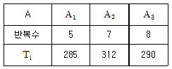
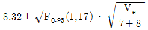
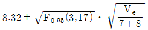
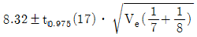
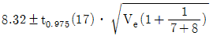
(정답률: 79%)
2. 2수준계 직교배열표의 설명 내용 중 바르지 않은 것은?
- 각 열의 자유도는 1이다.
- 어느 열이나 0의 수와 1의 수가 반반씩 나타나 있다.
- a2, b2, 혹은 c2은 1로 취급한다.
- 교호작용의 자유도는 2이다.
(정답률: 88%)

3. 다음표는 A, B, C 3인자를 3×3 라틴방격법 실험에 의해 얻어진 분산분석표의 일부이다. 다음 사항 중 바르지 않은 것은?
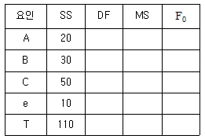
- 오차항의 자유도는 2이다.
- 인자 A의 평균제곱은 10이다.
- 인자 C의 평균제곱은 25이다.
- 수준 B의 검정통계량 값은 4이다.
(정답률: 89%)
4. 다음 표는 반복이 2회 있는 모수모형 2원배치법에 의하여 실험한 결과이다. 급간변동 SAB는 얼마인지 고르시오.
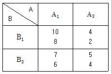
- 36.5
- 40.5
- 58.5
- 39.5
(정답률: 63%)
5. 1원배치 실험에서 분산분석결과 “통계적으로 유의하다”는 판단이 의미하는 것이 아닌 것은 무엇인가?
- 주어진 유의확률하에서 처리내 분산이 차이가 있다.
- 주어진 유의확률하에서 가정한 모형이 데이터 해석에 의미가 있다.
- 주어진 유의확률하에서 처리간 효과 차이가 있다.
- 주어진 유의확률하에서 처리간 평균이 차이가 있다.
(정답률: 52%)
6. 제품의 강도를 높이기 위하여 첨가제 2수준에서 [표]와 같이 반복 4회의 실험을 실시하였다. SA값은 얼마인가? (단, 단위는 kg/cm2 이다.)
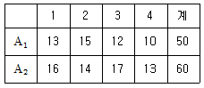
- 9.5
- 12.5
- 15.5
- 18.5
(정답률: 80%)
7. k개의 숫자 또는 글자를 어느 열, 어느 행에도 하나씩만 있게끔 나열하여 종횡 k개씩의 사각형이 되도록 하는 실험계획은 무엇인가?
- 라틴방격법
- 분할법
- 난괴법
- 2원배치법
(정답률: 96%)
8. 반복이 없는 2원배치 실험에서 두 인자 A, B가 모두 유의한 경우 2인자 수준조합에서 모평균
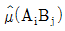
추정은 의미가 있다. A인자의 i수준과 B인자 j수준에서 모평균의 점추정 값은 얼마인가? (단, i=1, ∙∙∙.ℓ,j=1,∙∙∙,m 이다.)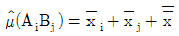
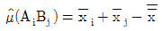
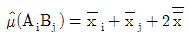
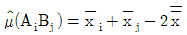
(정답률: 80%)
9. 다음은 분산분석표의 결과를 해석한 것이다. 바르지 않은 것은 무엇인가?
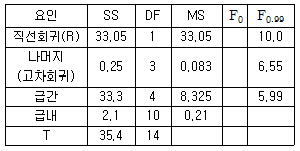
- 두변수간의 관계는 회귀직선으로 충분히 설명될 수 있다.
- 고차 회귀는 유의하지 않다.
- 고차 회귀에 대한 검정통계량 값은 0.395이다.
- 총변동 중에서 99.3%가 회귀직선에 의하여 설명된다.
(정답률: 63%)
10. 합성섬유의 어떤 성분과 섬유의 인장강도를 측정하였더니 S(xx)=190, S(xy)=210,  =25,
=25,  =30을 얻었다. 성분 x로부터 인장강도 y를 추정하는 단순 회귀추정식은 무엇인가?
=30을 얻었다. 성분 x로부터 인장강도 y를 추정하는 단순 회귀추정식은 무엇인가?
 =13.75+0.65x
=13.75+0.65x =13.75-0.65x
=13.75-0.65x =2.368+1.1⑤x
=2.368+1.1⑤x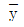
=2.368-1.1⑤x
(정답률: 67%)
11. 인자 A의 수준이 4, 반복수가 3인 1원배치 실험에서 분산분석 결과, Ve=0.0465 이었고,
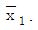
=8.360,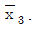
=9480이었다. μ(A1)와 μ(A3)의 평균치 차를 α=0.⑤로 구간추정치 값은 약 얼마인지 고르시오. (단, t0.975(8)=2.306 , t0.95(8)=1.860 이다.)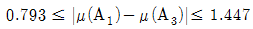
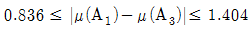
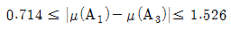
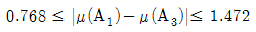
(정답률: 75%)
12. 단순회귀 모형의 분석 결과 S(xx)=64, S(xy)=120 일 때, 회귀에 의한 제곱합(SR)의 값은 얼마인가?
- 215
- 225
- 235
- 245
(정답률: 71%)
13. 인자 A의 수준이 4, 반복수가 3인 1원배치 실험에서 분산분석 결과 Ve=0.0465이었다. μ(Ai)와 μ(Ai∙)의 평균치 차를 a=0.01로 검정하고 싶다. μ(Ai)와 μ(Ai′)차가 얼마 이상일 때 유의적인지 고르시오. (단, t0.995(8)=3.355, t0.99(8)=2.896 이다.)
- 0.442
- 0.510
- 0.511
- 0.591
(정답률: 73%)
14. 반복이 일정한 모수모형 2원배치 실험에서 변동을 구할 때 올바른 관계식은 무엇인가?
- SA×B=SAB-SA-SB
- SA×B=SAB-SA+SB
- SA×B=SAB-SA+SB
- SA×B=SAB+SA+SB
(정답률: 78%)
15. 2원배치에서 AiBj의 조합의 모평균(μij)의 추정치와 신뢰한계는
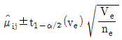
이다. 여기서 유효반복수(ne)를 설명한 것은 무엇인가?- 1/무시하지 않는 추정식의 합
- 실험총수/무시하지 않는 요인의 자유도의 합+1
- 실험총수/무시하지 않는 요인의 수+1
- 실험총수/무시하지 않는 요인의 수준의 합+1
(정답률: 92%)
16. A가 4수준, B가 3수준, 반복 2회인 모수모형 2원배치법에서 유효반복수(ne)의 값은 얼마인가? (단, 교호작용을 무시한 경우이다.)
- 2
- 3
- 4
- 5
(정답률: 69%)
17. 모수인자 A가 3수준인 1원배치 실험에서 각각의 반복수가 m1=4, m2=5, m3=7일 때, 오차항의 자유도는 얼마인가?
- 2
- 7
- 13
- 15
(정답률: 69%)
18. L16(215) 직교배열표를 사용할 때 C 인자를 기본표시 (acd)에, D 인자를 기본표시 (acd)에 배치하면 C×D는 어떤 기본표시에 배치되는지 고르시오.
- ab
- cd
- abcd
- a
(정답률: 60%)
19. 난괴법에 관한 설명으로 올바른 것은 무엇인가?
- 두 인자 모두 변량인자이다.
- xij=μ+ai+bl+eij인 데이터 구조식을 가지며, 여기서
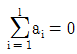
와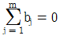
이다. - 분산분석 과정은 반복이 없는 이원배치법과 동일하다.
- 결측치가 존재해도 쉽게 해석이 용이하다.
(정답률: 74%)
20. 교호작용이 없는 경우의 2수준의 L8(27) 직교배열표를 사용하여 주효과 C를 구하면 얼마인가?
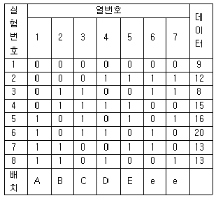
- 24.5
- 3.0
- 2.5
- 1.0
(정답률: 71%)
2과목: 통계적품질관리
21. KS Q 0001:2013 계수 및 계량 규준형 1회 샘플링 검사 제3부 : 계량 규준형 1회 샘플링 검사 방식(표준편차기지)에서 로트의 평균치를 보증하기 위한 경우에 어떤 성분의 평균치가 98%이상 되면 로트를 합격시키고 평균치가 94%이하로 되면 불합격시키고 싶을 때, 로트의 평균편차()가 6.4%라면 n의 크기는 얼마인가? (단, α=0.⑤, β=0.10 일 때 Kα=1.645, Kβ=1.282이다.)
- 20
- 22
- 34
- 37
(정답률: 48%)
22. 관리도에 타점하는 통계량 W가 평균은 μW이고 표준편차는 σW인 정규분포를 따른다고 할 때, 일반적으로 관리한계선은 μW±3σW을 사용한다. 이 관리도의 제1종의 과오의 크기는 얼마인가?
- 0.01
- 0.⑤
- 0.0027
- 0.00135
(정답률: 85%)
23. 검사 로트의 크기는 1600개이고, 이것을 생산라인별로 분류한 자료가 다음과 같다. 150개의 시료를 층별비례 샘플링으로 뽑고자 할 때, B 생산라인에서는 몇 개를 뽑아야 하는지 고르시오.
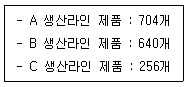
- 24개
- 50개
- 60개
- 66개
(정답률: 85%)
24. 시료의 크기가 5인  관리도에서 관리상한선이 43.4, 관리하한선이 16.6이었다. 공정의 분포가 N(30, 102)일 때, 이 관리도에서
관리도에서 관리상한선이 43.4, 관리하한선이 16.6이었다. 공정의 분포가 N(30, 102)일 때, 이 관리도에서  가 관리한계를 벗어날 확률은 얼마인가?
가 관리한계를 벗어날 확률은 얼마인가?
- 0.0013
- 0.0027
- 0.0228
- 0.0455
(정답률: 61%)
25. s 관리도의 관리한계 공식 중 바르지 않은 것은? (단, σ0 : σ의 표준값)
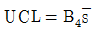
- LCL=B5σ0
- UCL=c4σ0+c5σ0
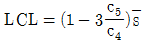
(정답률: 59%)
26. 도수분포표에서 가평균을 80으로 하였더니, 산술평균이 82,
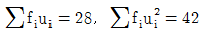
, 도수의 합 ∑fi이 14이다. 계급의 폭(h)은 얼마인지 고르시오.- 0.50
- 0.67
- 1.00
- 1.33
(정답률: 50%)
27. OC곡선에서 n과 c를 일정하게 하고 N을 1000, 5000, ∞로 변환하게 했을 때 어떻게 변화하는지 고르시오. (단,
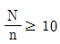
이다.)- 거의 변하지 않는다.
- 로트의 크기다 달라지면 로트의 크기에 따라 OC곡선이 변한다.
- 곡선의 기울기가 완만해진다.
- 곡선의 기울기가 가파르게 된다.
(정답률: 79%)
28. 두 변량 간에 측정되는 공분산과 상관계수에 대한 설명 중 바르지 않은 것은?
- 공분산이 0이면 상관계수는 0이다.
- 독립인 두 변량의 공분산은 0이다.
- 상관계수가 음수이면 공분산도 음수이다.
- 공분산과 상관계수는 모두 단위에 관계없이 일정하다.
(정답률: 64%)
29. 계수치 관리도에 해당하는 것은 무엇인가?
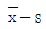
관리도 관리도
관리도- c관리도
- x관리도
(정답률: 77%)
30. 상관계수에 대한 설명으로 바르지 않은 것은?
- 상관계수(r)은 –1부터 1사이 값을 가진다.
- r＞0 일 때 정의 상관관계이다.
- r＜0 일 때 부의 상관관계이다.
- 산점도에서 점이 일직선상에 있으면 약한 상관관계가 있다.
(정답률: 85%)
31.
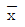
관리도에서 관리한계선을 벗어나는 점이 많아질 때의 설명으로 올바른 것은 무엇인가? (단, R 관리도는 안정되어 있으며, 군내변동 : , 군간변동 :
, 군간변동 :  이다.)
이다.) 가 크게 되어
가 크게 되어 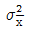
도 크게 된다. 는 작게 되고,
는 작게 되고,  는 크게 된다.
는 크게 된다.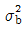
는 크게 된다. 는 작게 되고,
는 작게 되고, 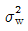
는 크게 된다.
(정답률: 50%)
32. 전수검사가 반드시 필요한 경우는 무엇인가?
- 전수검사를 쉽게 할 수 있을 경우
- 부적합품이 한 개라도 혼입되어서는 안 되는 경우
- 파괴시험인 경우
- 연속체나 대량품이 경우
(정답률: 74%)
33. A공장의 권취공정의 평균사절수는 100m2당 10회로 알려져 있다. 공정을 개선하여 운전해 보니 평균사절수가 5회로 나타났다. 공정 부적합수가 적어졌는지 유의수준 5%로 검정하면 무엇인가?
- 유의수준 5%로 공정 부적합수가 적어졌다고 할 수 없다.
- 유의수준 5%로 공정 부적합수가 적어졌다고 할 수 있다.
- 검정을 할 수 있는 조건이 아니다.
- 검정통계량은 약 –1.762 이다.
(정답률: 67%)
34. 모평균 μ0가 100(1-α)% 신뢰구간 내에 있을 때, 유의수준 α에서 귀무가설 H0:μ=μ0에 대한 설명으로 올바른 것은?
- 귀무가설을 기각할 수 없다.
- 귀무가설을 기가할 수 있다.
- 판단할 수 없다.
- 추정과 검정은 아무런 관계가 없다.
(정답률: 53%)
35.
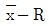
관리도에서 2개의 층 A, B 간 평균치의 유의차를 검정하는 식 (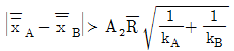
)을 적용하기 위한 전제조건으로 바르지 않은 것은?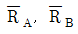
에 유의차가 없을 것- 두 관리도의 군의 수가 동일할 것
- 두 관리도가 모두 관리상태일 것
- 두 관리도가 대략적인 정규분포를 하고 있을 것
(정답률: 70%)
36. N(100, 52)의 모집단에서 n개의 시료를 뽑을 때 시료평균의 분포가 N(100, 12)이 되었다면 시료의 크기(n)는 얼마인가?
- 1
- 5
- 16
- 25
(정답률: 74%)
37. M 부품의 어떤 특성치는 모평균 10, 모분산 2인 확률분포를 따른다. 동일한 부품 10개를 한 줄로 이어 놓았을 때 전체의 분산은 얼마인가?
- 200
- 200
- 50
- 20
(정답률: 50%)
38. 관리계수에 대한 설명으로 올바른 것은 무엇인가?
- 관리계수가 0.7 이면 군구분이 나쁘다.
- 관리계수가 0.9 이면 군내변동이 크다.
- 관리계수가 1.1 이면 급간변동이 크다.
- 관리계수가 1.3 이면 대체로 관리상태를 볼 수 있다.
(정답률: 73%)
39. KS Q ISO 2859-1:2010 계수치 샘플링검사 절차-제1부:로트별 합격품질한계(AQL) 지표형 샘플링검사 방안에서 계수값 샘플링 검사의 특징으로 바르지 않은 것은?
- 합격품질수준 AQL을 기초로 하는 계수값 샘플링 검사는 연속로트에 적용되는 검사이다.
- 연속적 거래의 로트검사에 사용하며 장기적으로 품질을 보증한다.
- 검사의 엄격도 전환(스코어법)에 의해 생산자의 품질 향상에 자극을 준다.
- 불합격 로트의 처리방법이 전수검사에 따른 폐기, 선별, 수리, 재평가로 생산자가 결정하도록 되어 있다.
(정답률: 64%)
40. 연속확률분포에 관한 설명 중 바르지 않은 것은?
- 자유도가 무한대인 t분포는 정규분포에 근사한다.
- F분포는 두 집단의 평균에 대한 추정과 검정을 할 때 이용된다.
- 카이제곱분포는 정규분포를 따르는 변수의 분산에 대한 신뢰구간을 구하고, 검정을 할 때 이용된다.
- t분포는 표준정규분포를 따르는 변수와 카이제곱분포를 따르는 변수의 비율의 형태로 표현된다.
(정답률: 56%)
3과목: 생산시스템
41. PERT/CPM에서 어떤 요소작업의 정상작업이 10일에 250만원이고, 특급작업이 5일에 1000만원일 때 비용구배(Cost slope)는 얼마인가?
- 250만원/일
- 200만원/일
- 175만원/일
- 150만원/일
(정답률: 62%)
42. 표준시간 용도의 목적을 설명한 것으로 바르지 않은 것은?
- 작업의 수행도 및 생산성 측정을 위하여
- 능률급이나 직무급의 결정을 위하여
- 연습적인 작업방법의 안정 및 유지를 위하여
- 생산게획의 결정 및 실무검토를 위하여
(정답률: 41%)
43. 부품이나 자재가 제조공정에 투입되는 과정을 비롯하여 이들의 작업 및 검사의 순서를 나타내는 도표는 무엇인가?
- 작업공정도표(OPC)
- 흐름공정도표(FPC)
- 다품종공정도표(MPPC)
- 유입유출표(From-to-Chart)
(정답률: 70%)
44. 작업을 보통 매초 16내지 24프레임의 속도로 촬영하므로 육안으로 놓치기 쉬운 짧은 주기의 작업을 분석하는 데 효과적인 필름분석법은 무엇인가?
- 메모동작분석
- 미세동작분석
- 사이클 그래프분석
- 크로노사이클 그래프분석
(정답률: 75%)
45. 학습률이 80%, 첫 단위작업에 소요되는 시간이 150시간일 때, 15번째 단위시간은 약 얼마인지 고르시오.
- 62.7
- 65.4
- 68.7
- 70.4
(정답률: 46%)
46. A 제품의 연간 수요량을 지수평활법으로 예측하고자 한다. 전년도 예측값이 500개, 실제값이 550개일 때, 올해의 예측값은 얼마인가? (단, 지수평활계수(α)는 0.3 이다.)
- 515개
- 525개
- 535개
- 550개
(정답률: 40%)
47. 설비고장이 발생하기 전에 미리 점검 내지 검사활동을 하는 방식은 무엇인가?
- 사후보전(BM)
- 개량보전(CM)
- 보전예방(MP)
- 예방보전(PM)
(정답률: 69%)
48. 10회의 예비관측을 하여 다음과 같은 [자료]를 얻었다. 신뢰도 95%, 상대오차 ±10%를 만족하는 관측회수는 약 얼마인지 고르시오.
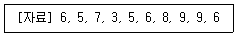
- 31회
- 41회
- 51회
- 61회
(정답률: 48%)
49. 일정관리의 주요 목표가 아닌 것은 무엇인가?
- 생산 및 조달시간의 최소화
- 대기 및 유휴시간의 최소화
- 납기의 이행 및 단축
- 생산비용의 평준화
(정답률: 81%)
50. JIT(Just In Time)의 특징이 아닌 것은 무엇인가?
- 비용절감
- 재고감소
- 간판(Kanban)방식
- Push 시스템
(정답률: 71%)
51. 설비고장을 없애려는 대책과 가장 거리가 먼 것은 무엇인가?
- 사용조건을 지킨다.
- 설비의 수명을 조사한다.
- 열화를 복원한다.
- 설계상의 약점을 개선한다.
(정답률: 48%)
52. 5S에 해당하지 않는 것은 무엇인가?
- 정리
- 정상화
- 청소
- 습관화
(정답률: 72%)
53. 재고통제방식에 대한 설명 중 바르지 않은 것은?
- 정기발주방식은 상대적으로 높은 재고유지비용을 수반하는 결점을 가지고 있다.
- 정기발주방식에서 발주주기는 EOQ와 연간 수요량으로부터 산출된다.
- 정량발주방식에 의해 재고를 통제하기 위해서는 재고수준을 주기적으로 검토해야 한다.
- 품목별 재고통제 방식은 ABC 분석 결과를 참고하여 결정된다.
(정답률: 50%)
54. 그룹테크놀로지(GT)의 설비배치방법으로 그룹별 배치라고도 하는 것은 무엇인가?
- 제품별 배치
- 공정별 배치
- 셀룰러 배치
- 위치고정형 배치
(정답률: 40%)
55. 다음 내용에 적절한 배치형태는 무엇인가?
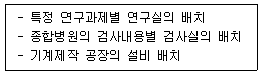
- 제품별 배치
- 공정별 배치
- 위치고정형 배치
- 라인별 배치
(정답률: 40%)
56. 내주 및 외주의 판단기준에 있어서 외주를 하여야 할 경우가 아닌 것은 무엇인가?
- 기밀보장이 필요한 경우
- 주문처에서 외주를 지정하는 경우
- 외주기업에서 특허권을 가지고 있는 경우
- 사내에 필요한 기술이나 설비가 아닌 경우
(정답률: 78%)
57. MRP의 특징에 대한 설명 내용으로 가장 거리가 먼 것은 무엇인가?
- 사전 납기 통제가 가능하다.
- 수요가 일정하며 연속적이라는 가정에서 출발한다.
- 상황변화에 따른 생산일정 및 자재계획변경이 용이하다.
- 종속수요품 각각에 대해서 수요예측을 별도로 행할 필요가 없다.
(정답률: 32%)
58. 1일 생산량은 500개이고, 실동시간이 400분이다. 부적합품률이 10%가 예상될 때 피치타임은 약 얼마인지 고르시오.
- 33.7초
- 36.9초
- 39.9초
- 43.2초
(정답률: 50%)
59. 과거의 모든 자료를 반영하며, 현시점에 가장 가까운 자료에 가장 높은 가중치를 부여하고 과거로 올라갈수록 낮은 가중치를 부여하는 시계열분석 방법은 무엇인가?
- 이동평균법
- 2점 이동평균법
- 지수평활법
- 최소자승법
(정답률: 66%)
60. 재고모형에서 Q시스템의 특징이 아닌 것은 무엇인가?
- 주문량은 정량이다.
- 재주문점이 없고, 목표재고수준이 있다.
- 고가의 단일품목에 적용한다.
- P시스템보다 상대적으로 적은 안전재고가 필요하다.
(정답률: 56%)
4과목: 품질경영
61. 공정능력에 관한 설명으로 올바른 것은?
- 공정능력은 결과가 아닌 절차에 대한 평가이다.
- 공정능력은 원인의 상태에 대한 규정이 필요없다.
- 공정능력은 과거에 만들어진 결과를 평가할 수 없다.
- 공정능력의 측도는 반드시 고정되어야 한다.
(정답률: 69%)
62. KS Q ISO 9000:2007 품질경영시스템-기본사항 및 용어에서 사용되는 문서의 형태에 관한 설명 중 바르지 않은 것은 무엇인가?
- 시방서 : 요구 사항을 명시한 문서
- 품질메뉴얼 : 조직의 품질경영시스템을 규정한 문서
- 품질계획서 : 활동과 프로세스를 일관 되게 수행하기 위한 방법엗 o한 정보를 제공하는 문서
- 기록 : 달성된 결과를 명시하거나 수행한 활동 시 증거를 제공하는 문서
(정답률: 40%)
63. 품질에 대한 정의는 시대에 따라 바뀌고 있다. 산업시대 초창기의 검사위주의 품질에서 생산위주의 품질로 다시 설계위주의 품질로 바뀌고 있다. 이와 같이 품질에 대한 정의는 협의에서 광의로 넓게 해석되고 있다. 다음 중 품질에 대한 해석을 가장 좁게 한 것은 무엇인가?
- 지금까지 제조업 중심에서 서비스업, 공공부분 등 모든 분야에 품질을 적용한다.
- 전체인력을 품질전문가로 키우기 보다는 소수의 품질 전문가를 양성하여 이들에게 품질을 책임지게 한다.
- 서비스업 등 비제조업에서 품질에 대한 측정치를 개발하여 객관적 과학적으로 개선활동을 한다.
- 제조업에서 설계부서, 생산부서, 검사부서 모두가 품질에 대하여 정확하게 알아야 한다.
(정답률: 70%)
64. KS A ISO 3:2012 표준수-표준수 수열에서 기본수열에 해당되는 것은 무엇인가?
- R 1
- R 5
- R 12
- R 80
(정답률: 48%)
65. 제품규격의 작성시 반드시 규정되지 않아도 되는 항목은 무엇인가?
- 적용범위
- 종류와 등급
- 검사 및 시험방법
- 구조 및 모양
(정답률: 43%)
66. 벤치마킹을 실시하는 목적으로 볼 수 없는 것은 무엇인가?
- 선진기술 및 정보 습득을 위해
- 가장 앞서가는 선진지표 발굴 및 적용을 통한 경영성과의 비교를 위해
- 외부적 비교시각/고객중심의 시각에 기초한 의미 있는 목표 및 업무 평가 기준의 구축을 위해
- 제품이 출하된 뒤 사회에 끼치는 손실을 최소화하기 위해
(정답률: 74%)
67. 기업이 고객의 만족 정도를 정확히 파악하기 위하여 고객 만족도를 조사하여야 하는데 이때 지켜야할 원칙으로 볼 수 없는 것은 무엇인가?
- 계속성의 원칙
- 정량성의 원칙
- 일회성의 원칙
- 정확성의 원칙
(정답률: 65%)
68. 6시그마의 본질로 볼 수 없는 것은 무엇인가?
- 고객 중심의 품질경영
- 벨트제도를 활용한 체계적 인재 육성
- 프로세스 평가ㆍ개선을 위한 과학적ㆍ통계적 방법
- ISO 9000 인증제도를 이용한 새로운 기법
(정답률: 71%)
69. 품질관리수법 중 신QC 7가지 도구에 해당되지 않는 것은 무엇인가?
- 산점도법
- 계통도법
- 연관도법
- 매트릭스도법
(정답률: 64%)
70. M 공정의 제품에 대한 공정능력지수(Cp)가 1≥Cp≥0.67일 때 필요한 조치로 가장 거리가 먼 것은 무엇인가?
- 규격을 엄격하게 유지해야 한다.
- 적정한 능력을 보유한 공정으로 작업을 옮긴다.
- 현공정의 능력을 향상시키기 위한 투자를 한다.
- 검사를 강화하여 부적합품의 유출을 방지한다.
(정답률: 56%)
71. 품질보증을 위한 신뢰성에 대한 설명 중 바르지 않은 것은?
- 신뢰성이란 어느 기간 동안 의도하는 기능을 고장나지 않고 만족스럽게 수행하는 능력이다.
- 신뢰성 향상은 생산, 구매, 서비스 부서들과 같이 대책을 논의하기보다는 설계부서에서 책임지고 수행해야 한다.
- 신뢰성은 제품이나 공정의 설계에 의해서 결정되는 고유신뢰성과 사용기간 동안의 실제 신뢰성인 사용신뢰성으로 구별한다.
- 신뢰성은 임무기간 중 일어나는 단위시간당 고장횟수 즉, 고장률로 결정된다.
(정답률: 63%)
72. KS A 0001:2008 표준서의 서식 및 작성방법에 ‘용어에 대하여 개념 본체 안에 위치하여 단어로 그 개념을 표현하고 다른 개념과의 차이를 명확히 하는 정의와 함께 규정하는 표준’은 무엇인지 고르시오.
- 관련표준
- 제품표준
- 방법표준
- 전달표준
(정답률: 55%)
73. 다음 품질코스트 중 F-Cost에 해당하는 것은 무엇인가?
- 시장조사비용
- 계측기교정비용
- 수입검사비용
- 무상서비스비용
(정답률: 66%)
74. 계측의 목적에 의한 분류 중 관리하는 사람이 관리를 목적으로 측정, 평가하기 위한 계측의 범주로 포함하기 어려운 것은 무엇인가?
- 자재, 에너지의 계측
- 생산능률의 계측
- 환경조건의 계측
- 연구실험실에서 시험ㆍ연구계측
(정답률: 54%)
75. 품질 및 고객만족과 관련된 자료와 정보를 효과적으로 관리하기 위해서 측정하거나 조사해야 할 내용으로 옳지 않은 것은 무엇인가?
- 제품과 서비스 품질 : 생산시스템의 산출물, 제품과 서비스를 창출하는 프로세스
- 사업과 지원 서비스 : 기업의 핵심 제조나 서비스 능력을 지원하는 기능 및 프로세스
- 마케팅 : 제품판매 증대를 위한 광고 제작 및 홍보
- 운영성과 : 최고경영자의 의사결정을 위한 고객 관련 및 재무적 자료
(정답률: 48%)
76. 산업표준화에서 3S란 무엇인가?
- 표준화, 전문화, 분업화
- 단순화, 분업화, 전문화
- 전문화, 표준화, 기준화
- 단순화, 표준화, 전문화
(정답률: 62%)
77. 제조현장에서 제조품질을 달성하기 위하여 관리하는 업무 중 바르지 않은 것은?
- 공정능력의 평가와 공정의 계획
- 품질산포와 산포요인의 발견
- 신뢰성 표준의 설정
- 부적합품 원인의 제거 및 개선
(정답률: 45%)
78. 다음의 가상으로 작성한 기사를 보고 해당 회사에서 취한 대책으로 가장 거리가 먼 것은 무엇인가?
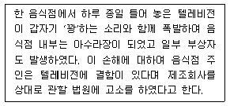
- 피해자의 사용상 부주의로 인한 과실이라며 책임을 전가하였다.
- 분쟁 해결대책을 수립하였다.
- 소비자의 PL 고소로 인한 기업의 이미지 실추와 손해가 발생될 것으로 보고 전담팀을 조직하였다.
- 동일한 사고가 재발하지 않도록 설계단계, 제조단계 및 사용설명서 등 전 과정을 다시 점검하였다.
(정답률: 81%)
79. 공정능력에 관한 설명 중 바르지 않은 것은 무엇인가?
- 제품의 품질변동은 공정내에서 5M1E에 의하여 영향을 받는다.
- 공정능력이 클수록 공정읲 품질수준이 높다.
- 공정능력조사시 우연원인이 개입되지 않아야 한다.
- 공정능력이 부족하면 공정을 개선하여야 한다.
(정답률: 69%)
80. 어떤 조립품의 구멍과 축의 치수가 다음 표와 같이 주어질 때 평균 틈새는 얼마인지 고르시오.
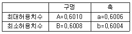
- 0.0006
- 0.0004
- 0.0002
- 0.0001
(정답률: 55%)
교호작용의 자유도가 2가 되는 경우는 2x2 배열일 때 뿐이다. 이 경우에는 각각의 행과 열이 독립적으로 영향을 미치기 때문에 교호작용의 자유도가 2가 된다.
교호작용의 자유도는 각 요인의 자유도와 오차의 자유도에 비해 상대적으로 작은 값이기 때문에, 실험 설계 시에는 교호작용을 최소화하도록 노력해야 한다.